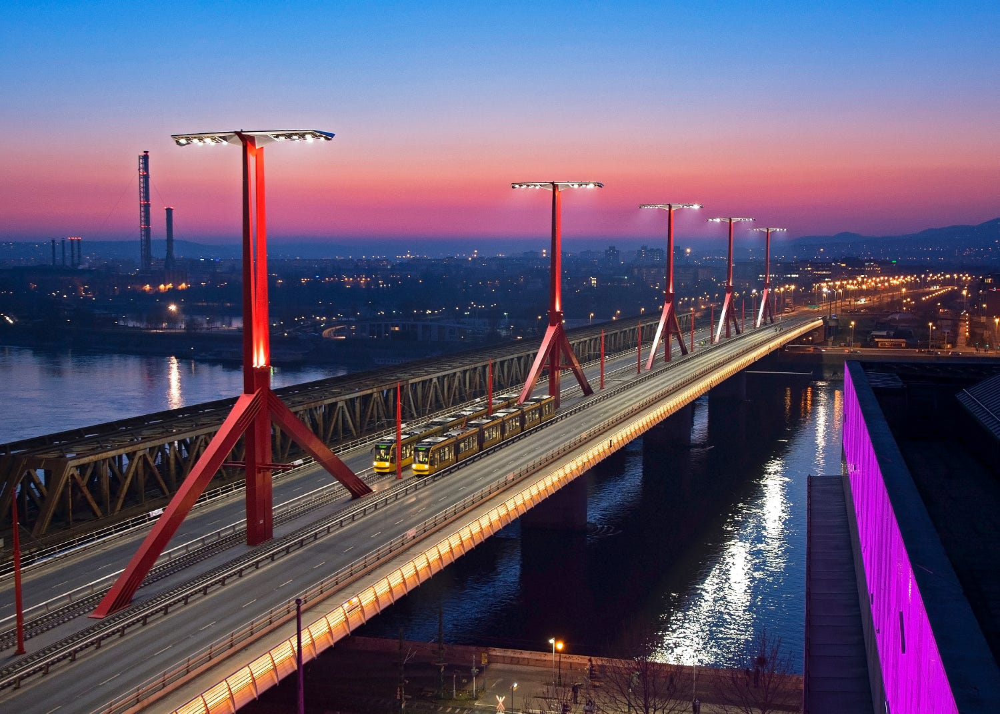

Rákóczi-híd
A Rákóczi híd Budapest második legújabb Duna-hídja, Lágymányos és Ferencváros között.
Közvetlenül az Összekötő vasúti híd mellett található. 1995–2011 között a Lágymányosi híd nevet viselte.
Teljes hosszúsága: 494,8 m.
Szélessége: 30,6 m.
Sávok száma: 2×2 közút, 2×1 villamos.
